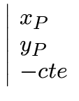
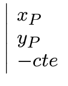
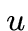
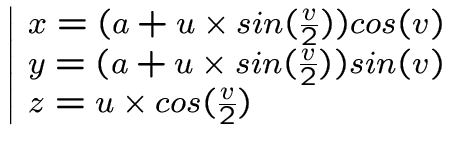

Goodies for the project Poor Raymond
 A configuration file where we find the description
A configuration file where we find the description
of our scene, objects and their characteristics.
A complex configuration file to all
fantasies, mini language to integrate functions
original disturbance or equations chiadés objects.
Why not a format compatible with modelers or
raytracers market?
129
Exotic objects?
Dish
This object is from the same family as the sphere, cylinder and
cone. Its equation in single position along the axis of
is this:
and normal:
 

The hyperboloid
Same remarks as for the previous object.
and normal:


130
Or a parallel universe?
Tablecloths
This is mathematical equations of the form  .
.
You can see them as objects in their own,
or as perturbation functions of a plan.
Be careful, the calculation of normal requires strong
mathematical knowledge. Example:
The torre
torre A is a buoy, a tube, as you want.
Here's parametric equation is the central ray of torre, is the radius of the cut
cross, and are variable parameters (as
in our right equations). There is much beefier.




131
Perhaps even further ...
The Moebius strip
This is my favorite:
A vomitting, right?

![\ Includegraphics [width = 20cm] {} escher_red_ants.ps](./rt10_files/img104.png)
132
Ol - IGRAPH tek1 - January 22, 2002 - Converted by LaTeX2HTML
Original text
Contribute a better translation